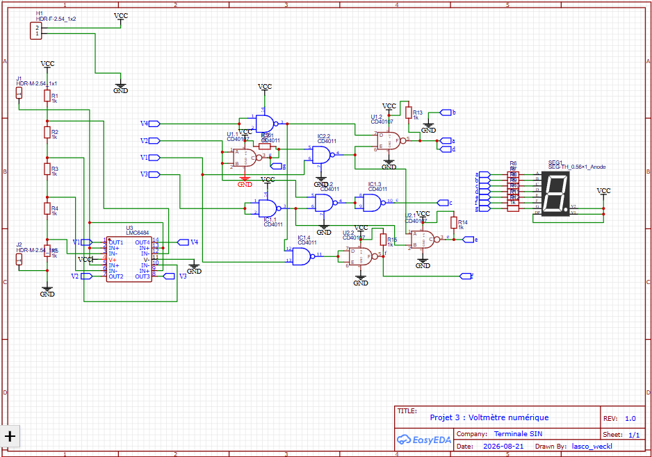
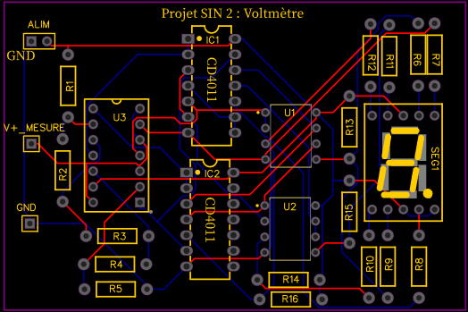

Terminale STI2D – Spécialité SIN · Séquence 1 : Électricité
Séance 9 – Test du PCB et soudure des composants
Projet : voltmètre numérique
1) Test de continuité du PCB
Avant toute soudure, vérifier que les pistes du circuit imprimé assurent les connexions attendues et qu'aucun court-circuit indésirable n'est présent.


Travail demandé
- Observer le schéma électrique et le PCB. Repérer les pistes et les pastilles correspondant aux principales connexions du montage.
- Régler le multimètre sur la fonction test de continuité. Vérifier son fonctionnement en mettant brièvement les deux pointes en contact.
- Pour chaque liaison identifiée sur le schéma, placer les pointes du multimètre sur les deux pastilles correspondantes. Vérifier la continuité attendue.
- Contrôler l'absence de continuité entre les pistes qui ne doivent pas être reliées, notamment entre les lignes d'alimentation et la masse.
- Reporter les résultats dans le tableau et signaler toute anomalie avant de passer à la soudure.
| Points de contrôle (pastilles / pistes) | Résultat attendu | Résultat mesuré |
|---|---|---|
| Connexion n° 1 : ................................ | Continuité | |
| Connexion n° 2 : ................................ | Continuité | |
| Connexion n° 3 : ................................ | Continuité | |
| Deux pistes distinctes : ........................ | Absence de continuité | |
| Alimentation / masse | Absence de court-circuit |
Conclusion : le PCB est-il conforme au schéma électrique ? Justifier.
2) Soudage des composants
Une fois le PCB contrôlé, procéder à l'implantation et à la soudure des composants électroniques en suivant le schéma et les repères de la carte.
Nomenclature des composants du voltmètre
Avant la soudure, vérifier la présence des composants à partir de la nomenclature du PCB.
| Référence / valeur | Repères sur le PCB | Quantité |
|---|---|---|
| HDR-F-2.54_1x2 | H1 | 1 |
| HDR-M-2.54_1x1 | J1,J2 | 2 |
| 1k | R1,R2,R3,R4,R5,R13,R14,R15,R16 | 9 |
| 220 | R6,R7,R8,R9,R10,R11,R12 | 7 |
| SEG-TH_0.56×1_Anode | SEG1 | 1 |
| LMC6484 | U3 | 1 |
| CD4011 | IC1,IC2 | 2 |
| CD40107 | U1,U2 | 2 |
Travail demandé
- Identifier les composants et vérifier leur valeur ou leur référence à l'aide du schéma électrique et des marquages du PCB.
- Repérer l'emplacement de chaque composant. Vérifier particulièrement le sens des composants polarisés (DEL, circuits intégrés, etc., selon les composants effectivement présents sur la carte).
- Implanter les composants, de préférence du plus bas au plus haut, afin de faciliter leur maintien pendant la soudure.
- Souder les broches avec une quantité adaptée de soudure. Éviter les ponts d'étain entre pastilles voisines.
- Après refroidissement, couper les longueurs de broches excédentaires si nécessaire, sans endommager les soudures.
- Inspecter chaque soudure : aspect régulier, bonne adhérence à la pastille, absence de soudure froide et de court-circuit.
- Effectuer un dernier contrôle de continuité et d'absence de court-circuit avant toute mise sous tension.
Valeurs et références des composants vérifiées
Polarités et orientations vérifiées
Soudures inspectées visuellement
Absence de ponts de soudure et de courts-circuits vérifiée
PCB prêt à être présenté à l'enseignant avant alimentation